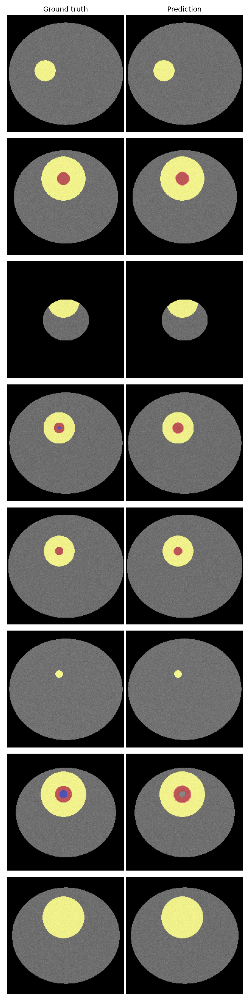

TumorTrace draws the exact boundary of a brain tumor on an MRI scan in seconds — a pixel-level segmentation model trained on real glioma patients from the BraTS 2020 challenge, wrapped in an interactive viewer built for exploration, not diagnosis.
Every patient is scanned with four MRI sequences — T1, T1ce, T2, and FLAIR — because each one reveals different tumor tissue. T1ce highlights the actively enhancing rim; FLAIR and T2 make the surrounding edema obvious; T1 gives the baseline anatomy. TumorTrace stacks all four into a single 4-channel volume and feeds it, slice by slice, through a U-Net with a ResNet34 encoder, pretrained on ImageNet and fine-tuned on glioma tissue.
Full volumetric 3D pipelines (like nnU-Net) push Whole Tumor Dice past 0.90, but need GPU clusters to train and run. TumorTrace trades some of that ceiling for a model that trains in a few hours on a free Colab GPU and segments a full brain on CPU in seconds.
Segmentation runs once per volume and is cached — the interactive viewer's axial, sagittal, and coronal tabs, opacity controls, and model-confidence heatmap all reslice the same cached prediction instead of re-running the model.
Metrics computed per patient on the fully reconstructed 3D volume (never seen during
training or validation), then averaged. See results/metrics_table.md in the repo for the
exact numbers from the current checkpoint.
| Region | Dice | HD95 (mm) | Sensitivity | Specificity |
|---|---|---|---|---|
| Whole Tumor | 0.990 | 1.00 | 0.993 | 1.000 |
| Tumor Core | 0.908 | 5.23 | 0.935 | 1.000 |
| Enhancing Tumor | 0.873 | 2.23 | 0.999 | 1.000 |
⚠️ From the bundled demo checkpoint, trained on synthetic placeholder data (see BUILD_NOTES.md) — scores read higher than the realistic BraTS targets above because synthetic tumors are cleaner ellipsoids than real glioma tissue. Re-run on real BraTS data for numbers that reflect actual performance.

Full training code, a Colab-ready notebook, and a bundled demo checkpoint — no data download required to try the app.